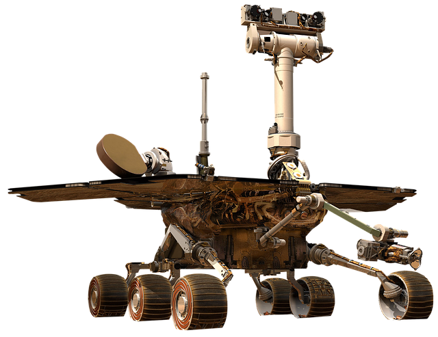

NASA'S PERSEVERANCE ROVER
The Perseverance rover is a robotic spacecraft designed and operated by NASA to explore Mars. It launched in July 2020 and landed on Mars in February 2021, with the goal of studying the planet's geology, climate, and potential for past or present microbial life. Equipped with a suite of advanced scientific instruments and cameras, the Perseverance rover is a key part of NASA's broader Mars exploration program and represents a major milestone in humanity's quest to understand our place in the universe.
Introduction
NASA's Perseverance rover is a robotic spacecraft that was launched on July 30, 2020, with the goal of exploring the Martian surface and searching for signs of past or present microbial life.
The rover landed successfully in Jezero Crater on February 18, 2021, and has been conducting scientific experiments and collecting data ever since. In this blog post, we'll take a closer look at the Perseverance rover and its mission, examining its design, scientific objectives, and potential impact on our understanding of Mars and the universe.
Design
The Perseverance rover is a state-of-the-art robotic spacecraft that is designed to operate on the Martian surface for at least one Mars year (about 687 Earth days). It weighs over 2,200 pounds and is about the size of a small car. The rover is equipped with six wheels, each of which has its own motor, and can travel up to 152 meters (500 feet) per hour. It is powered by a radioisotope thermoelectric generator (RTG) that converts the heat generated by the decay of plutonium-238 into electricity.
Instruments
The Perseverance rover is equipped with a suite of advanced scientific instruments and cameras that allow it to study the Martian environment in unprecedented detail. Some of the key instruments on the rover include:
- SuperCam: A laser that can vaporize rock samples and analyze their composition with a spectrometer.
- MOXIE: An experiment that will attempt to produce oxygen from the Martian atmosphere.
- SHERLOC: An instrument that can detect organic molecules and minerals that may be signs of past microbial life.
- RIMFAX: A ground-penetrating radar that can create 3D maps of the Martian subsurface.
Scientific Objectives:
The Perseverance rover's mission is focused on three main scientific objectives:
Impact:
The Perseverance rover has the potential to make significant contributions to our understanding of Mars and the universe.
By studying the Martian environment and searching for signs of past or present life, the rover could help answer some of the most fundamental questions about the origins and evolution of our solar system and the possibility of life beyond Earth. In addition, the technologies and techniques developed for the rover could pave the way for future human missions to Mars and other destinations in the solar system.